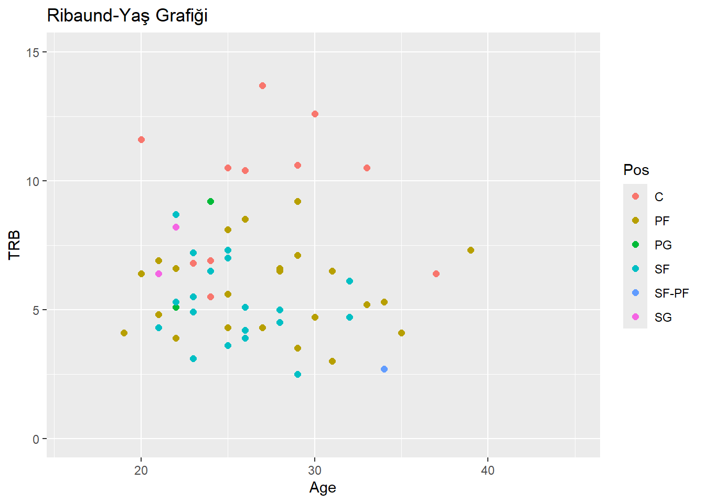
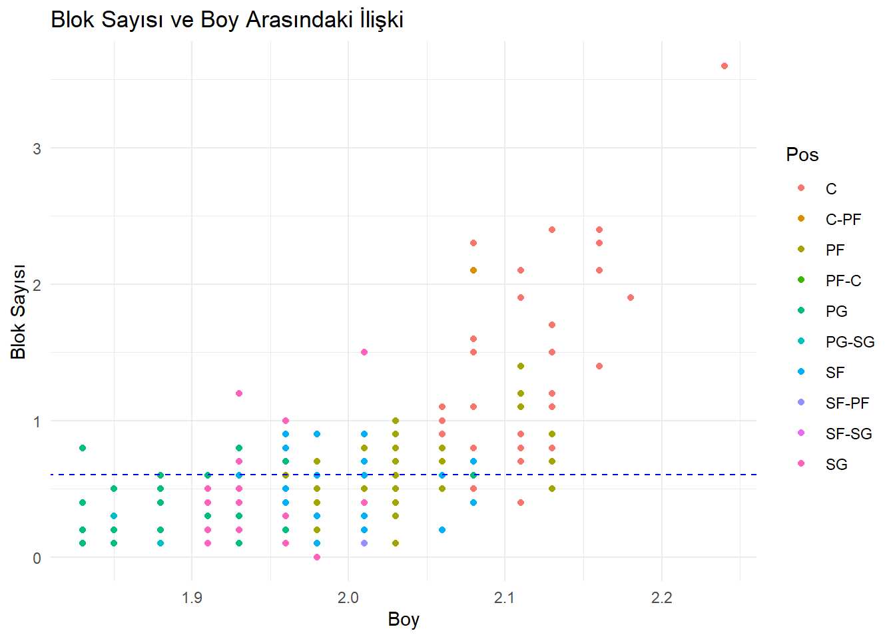
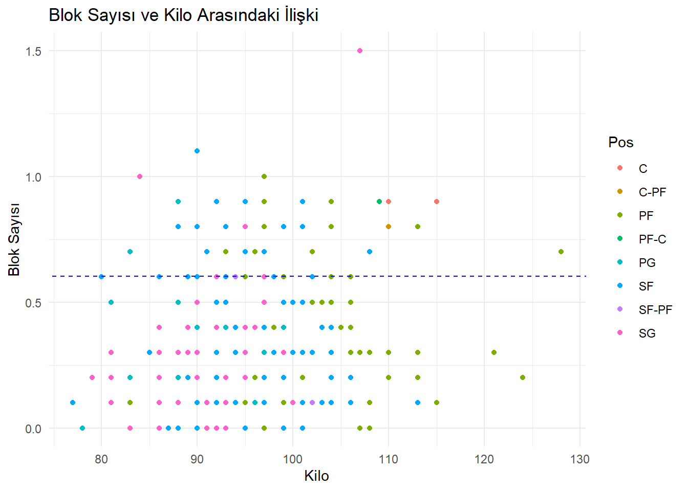
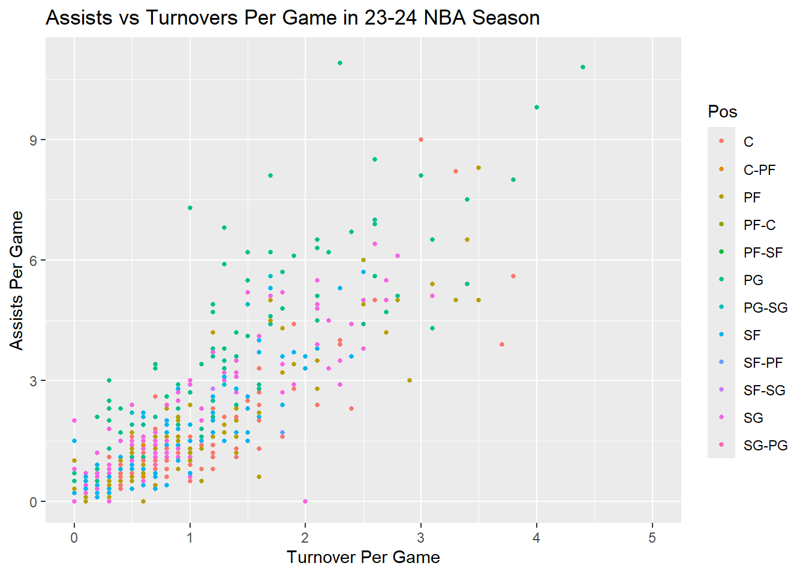
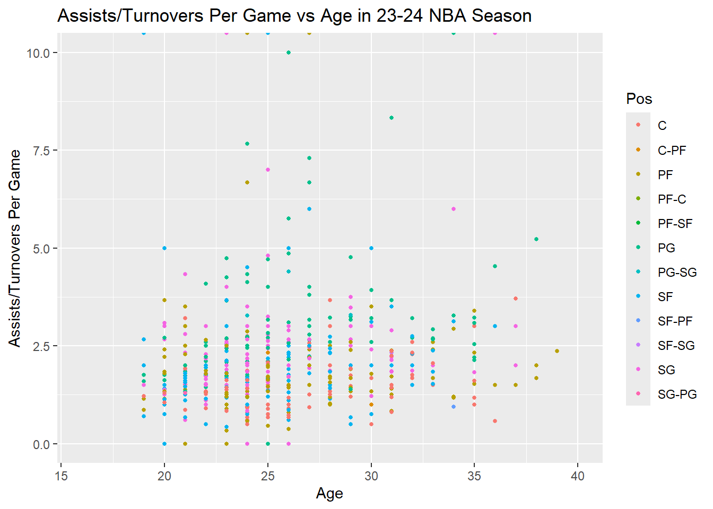
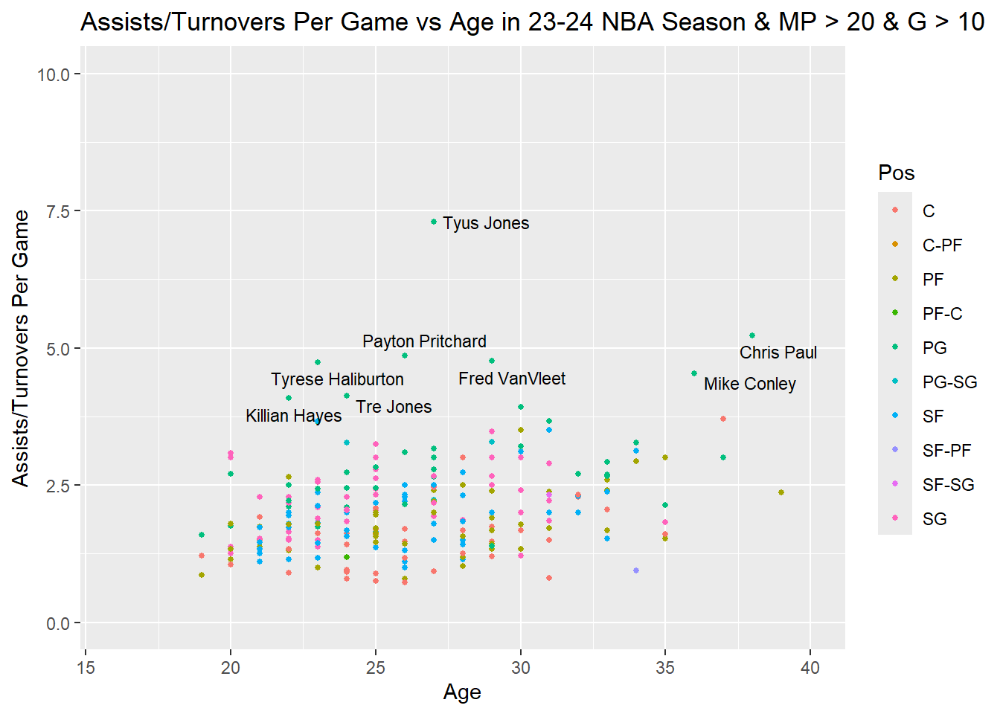
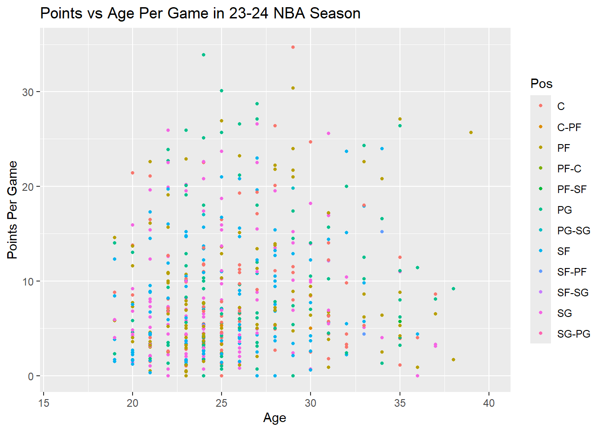
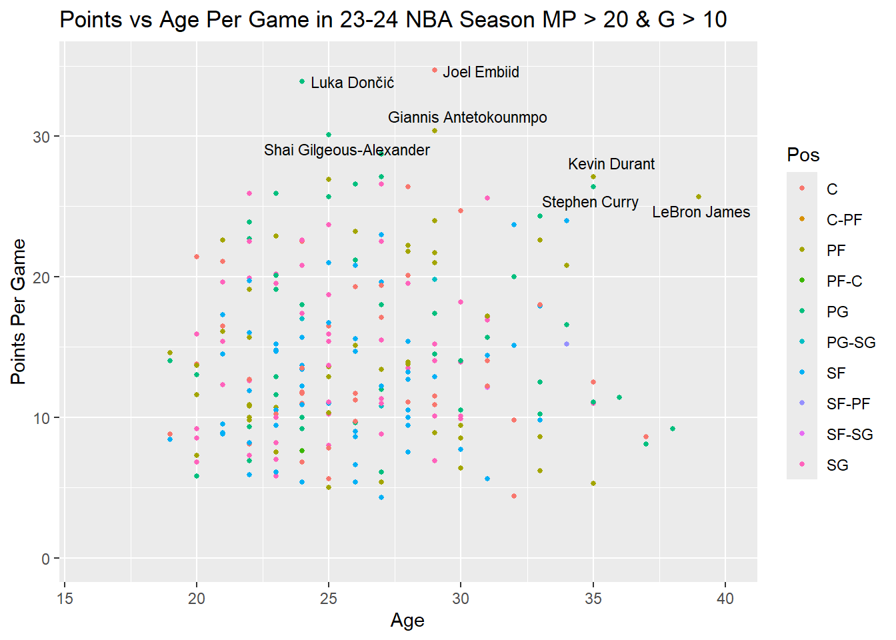

Projemizle ilgili güncellemelerden haberdar olmak için bu alanı takip edin.
1 Proje Genel Bakışı ve Kapsamı
Code Busters olarak dönem projemizde NBA’in 2023-2024 sezonuna ait oyuncu istatistiklerinden yola çıkarak oyuncu performansını etkileyen parametreleri incelemeyi amaçladık. Projede, R Studio kullanarak veri ayıklama, keşifsel veri analizi, görselleştirme ve istatistiksel analiz teknikleri kullanılması planlandı.
1.1 Analiz Edilecek Değişkenler:
Oyuncu istatistikleri: Maç başı Sayı, Asist, Ribaund, Blok, Top çalma, Saha İçi Atış Yüzdesi, Saha Dışı Atış Yüzdesi vb.
Oyuncu Özellikleri: Yaş, Boy, Kilo, Pozisyon vb.
1.2 Analiz Teknikleri:
Eksik verilerin işlenmesi, veri türlerinin dönüştürülmesi
Veri dağılımlarının incelenmesi, dağılım grafikleri ile görselleştirme
Beklenen sonuçların gerçek sonuçlar ile karşılaştırılması
1.3 Kısıtlar ve Önemli Notlar:
Veri setinde eksik gözlemler olabilir, bunların ele alınması ve gelecek çalışmalarda etkisinin değerlendirilmesi gerekebilir. Oyuncu istatistikleri ve oyuncu özellikleri arasındaki ilişki göründüğünden daha karmaşıktır ve tek bir faktörle sınırlı olmayabilir.
1.4 Zaman Çizelgesi:
Veri toplama ve temizleme, incelenecek parametreler ve analizi , sonuçların derlenmesi ve sunumu adımları için atanmış süre 6 Nisan ile 15 Mayıs aralığıdır, tabiki son haftaya bırakmadık…
2 Veri
2.1 Veri Kaynağı
https://www.basketball-reference.com/leagues/NBA_2024_totals.html sayfasından csv formatı ile çekildi. Ancak ilişki kuracağımız alt başlıklardan kilo ve boy verisi bu data setinde yer almıyordu. Bu sebeple veriyi ön işlemeye tabi tuttuk.
https://www.nba.com/players sayfasından oyuncuların boy ve kilo verisi alındı ve ana veri setine yeni bir sütun olarak eklendi.
2.2 Veri Hakkında Genel Bilgiler
NBA (National Basketball Association), dünya genelinde büyük bir popülerliğe sahip olan profesyonel basketbol liglerinden biridir. NBA’de yer alan takımlar, Amerika Birleşik Devletleri ve Kanada’da bulunan şehirleri temsil eder ve her sezon düzenlenen maçlar büyük bir izleyici kitlesi tarafından takip edilir.
NBA oyuncu istatistikleri ve özellikleri, ligde yer alan oyuncuların performansını değerlendirmek ve takımların başarısını analiz etmek için kullanılan önemli veri setlerinden biridir. Bu veriler, genellikle sezon boyunca her oyuncunun oynadığı maçlardaki istatistikleri içerir ve aynı zamanda oyuncuların kişisel özelliklerini de kapsar.
Oyuncu istatistikleri genellikle şunları içerir:
Sayı: Oyuncunun maç başına attığı sayı. Asist: Oyuncunun maç başına yaptığı asist. Ribaund: Oyuncunun maç başına aldığı ribaund. Blok: Oyuncunun maç başına yaptığı blok. Top Çalma: Oyuncunun maç başına yaptığı top çalma. Saha İçi ve Saha Dışı Atış Yüzdeleri: Oyuncunun maç başına saha içi ve saha dışı atışlardan elde ettiği yüzde.
Bunların yanı sıra, oyuncu özellikleri de önemli bir role sahiptir. Oyuncu özellikleri genellikle şunları içerir:
NBA oyuncu istatistikleri ve özellikleri spor analizi, oyuncu performansının değerlendirilmesi ve takım stratejilerinin oluşturulmasında önemli bir rol oynar. Bu veriler, hem spor endüstrisi uzmanları hem de basketbol severler için değerli bir kaynaktır ve geniş bir analiz ve araştırma alanı sunar.
2.3 Tercih Sebebi
NBA, dünya genelinde büyük bir popülerliğe sahip olan profesyonel bir spor ligi olduğundan, oyuncu istatistikleri ve özellikleri genellikle kapsamlı, güvenilir ve güncel veri kaynaklarına sahiptir. 2023-2024 sezonu ile filtreleyerek analizimiz için ideal bir veri seti sağladık.
NBA oyuncuları hakkında toplanan veriler, oyuncuların performansını değerlendirmek için çeşitli değişkenleri içermektedir. Sayı, asist, ribaund gibi performans ölçütlerinden; oyuncunun yaşı, boyu, kilosu gibi kişisel özelliklerine kadar geniş bir veri sunmuş, bu çeşitlilik ise farklı ilişkileri inceleme fırsatını yaratmıştır.
Basketbol dünya genelinde milyonlarca insanı ilgilendiren bir spor dalıdır. Bu nedenle, geniş bir kitleye hitap edeceğini ve ilgi çekebileceğini düşündük. Bunun da projenin etkileşim ve geri bildirim potansiyelini arttırmasını umut ettik. Bu verileri kullanmak, spor analizi konusunda ilgili olan bireyler için heyecan verici bir proje konusu olmuştur.
2.4 Ön İşleme
Bazı veri setleri, analize hazır değildi. Veri setlerini kullanabilmek için önce ön işlemeye ihtiyaç duyduk. Proje konumuz NBA oyuncularının sezondaki çeşitli istatististiklerine dayanıyordu ancak hazır veri setleri yoktu. Bu yüzden NBA’in resmi websitesinden yayınladığı istatistikleri projemizde kullanabilmek için veri seti yani .csv formatında excell dosyalarına çevirdik.
https://www.nba.com/players sayfasından ise 572 oyuncunun boy, kilo verisini ana veri setine yeni kolon olarak ekledik.
3 Analiz
Bu analizde NBA 2023-24 sezonunda oynayan oyuncularin maç başı ortalama verileri kullanılmıştır. İncelenecek alt başlıklar aşağıdaki gibidir:
veri %>% dplyr::filter(MP >25& Height>2.0& Height<2.1) %>%ggplot() +geom_point(aes(x = Age, y = TRB , color =Pos), size =2)+scale_x_continuous(limits =c(16, 45)) +scale_y_continuous(limits =c(0, 15))+ggtitle("Ribaund-Yaş Grafiği")

Ribaund-Boy grafiğinde rebound sayısı ile boyun doğru orantılı bir şekilde arttığını gözlemledik.Aynı zamanda pozisyonlara göre renklendirme ekledik ve C ile PF (4 ve 5 numaralı mevkiler) pozisyonlarındaki oyuncuların ribaund sayısının daha yüksek olduğunu gözlemledik.Bu grafiğe baktığımızda boyu uzun olmasına rağmen ribaund sayısı düşük çıkan outlierslar mevcut. Ancak bu sonucu doğrudan çıkarmamız mümkün değildir. Bu karşılaştırmayı yapabilmek için oyuncuların belli bir süre üzerinde oynamış olması gerekmektedir.
İkinci grafikte veri sadeleştirmesi yapmamız gerektiğinden MP değerini kullanarak sadeleştirmeye gittik. En az 25 dakika oyunda kalanları incelediğimizde bir önceki grafikteki outliersın kaybolduğunu gözlemliyoruz. İncelediğimiz bu durum aslında ilk incelememizin doğru bir kıyaslama olmadığını bize göstermektedir.
Veriyi sadeleştirdikten sonra yeni parametrelerle inceleme yapabilmek için boy parametresinde sabit aralık belirledik. Boyu 2.0 ile 2.1 arası olan oyuncular için TRB verisini Kilo ve Yaş parametreleriyle tekrardan inceledik. Bunun sonucunda :
Ribaund-Kilo grafiği bizlere oyuncuların kilosu ile rebound sayısının doğru orantılı olduğuu göstermektedir.
Ribaund-Yaş grafiğinde ise hiçbir çarpıcı gözleme rastlanmamıştır.
. . .
3.2 Blok sayısı - Boy
# Veri setini yüklemeveri <-read.csv(file ="NBA_Dataset_yeni.csv", header =TRUE, sep =",")# veriyi BLK sütununa göre sıralamablok_data <- veri[order(veri$BLK, decreasing =TRUE),]# BLK sütununa göre sıralanan veriyi almablok_top <- blok_data[1:572,]BlokAnaliz <-subset(blok_top, select =c("Player", "BLK", "Height","MP","Weight"))colnames(BlokAnaliz) <-c("oyuncu", "blok", "boy","süre","kilo")# boy sütununu düzgün formata çevirmeBlokAnaliz$boy <-as.numeric(gsub(",", ".", BlokAnaliz$boy))# ggplot2 kütüphanesini yüklemelibrary(ggplot2)library(dslabs)library(conflicted)# Library mesajlarını göstermeden yüklemek için eklendisuppressPackageStartupMessages(library(tidyverse))# MP'ye göre filtreleme yapalımfiltreli_veri <- veri %>% dplyr::filter(MP >20)# Filtrelenmiş veriyi ekrana yazdırın#print(filtreli_veri)# Ortalama blok hesaplamaortalama_blok <-mean(filtreli_veri$BLK)# Scatterplot çizimiggplot(filtreli_veri, aes(x = Height, y = BLK, color=Pos)) +geom_point() +geom_abline(intercept = ortalama_blok, slope =0, linetype ="dashed", color ="blue") +labs(title ="Blok Sayısı ve Boy Arasındaki İlişki",x ="Boy",y ="Blok Sayısı") +theme_minimal()

Bu analizde NBA oyuncularından 20 dakikadan fazla oyunda kalmış oyuncuların Block başarılarının boyla ilgilisi analiz edilmiştir. Renkler pozisyonları göstermektedir. PF-Pivot oyuncuyu göstermektedir.
Boy ile Blok sayısı arasındaki bağlantıyı grafik üzerinden değerlendirdiğimizde
Boyu 1.95 ile 2.05 arasında olan oyuncuların blok sayıları benzerdir.
Blok sayısı 1.5 ve üzerine olan oyuncuların hepsi 2 metreden uzundur.
Pivot oyuncuların boyları 1.93 metre ve üzerindedir.
İlk maddedeki yoğunluk nedeniyle bu oyuncuların yaş ve kilolarını da inceledik. . . .
# Veri setini yüklemeveri <-read.csv(file ="NBA_Dataset_yeni.csv", header =TRUE, sep =",")# veriyi BLK sütununa göre sıralamablok_data <- veri[order(veri$BLK, decreasing =TRUE),]# BLK sütununa göre sıralanan veriyi almablok_top <- blok_data[1:572,]BlokAnaliz <-subset(blok_top, select =c("Player", "BLK", "Height","MP","Weight"))colnames(BlokAnaliz) <-c("oyuncu", "blok", "boy","süre","kilo")# ggplot2 kütüphanesini yüklemelibrary(ggplot2)library(dslabs)library(conflicted)# Library mesajlarını göstermeden yüklemek için eklendisuppressPackageStartupMessages(library(tidyverse))# MP'ye göre filtreleme yapalımfiltreli_veri <- veri %>% dplyr::filter(MP >20)# Boya göre filtreleme yapalımfiltreli_veri2 <- dplyr::filter(veri, Height >=1.95& Height <=2.05)# Filtrelenmiş veriyi ekrana yazdırın#print(filtreli_veri)# Ortalama blok hesaplamaortalama_blok <-mean(filtreli_veri$BLK)# Scatterplot çizimiggplot(filtreli_veri2, aes(x = Weight, y = BLK, color=Pos)) +geom_point() +geom_abline(intercept = ortalama_blok, slope =0, linetype ="dashed", color ="blue") +labs(title ="Blok Sayısı ve Kilo Arasındaki İlişki",x ="Kilo",y ="Blok Sayısı") +theme_minimal()

Bu analizde NBA oyuncularından 20 dakikadan fazla oyunda kalmış ve boyu 1.95 ile 2.05 arasında olan oyuncuların Block başarılarının kilo ile ilgisi analiz edilmiştir. Renkler pozisyonları göstermektedir.
Kilo ile Blok sayısı arasındaki bağlantıyı grafik üzerinden değerlendirdiğimizde
Ortalama blok sayısının üzerinde blok başarısı elde eden oyuncuların 80-115 kg arasındadır.
Bir oyuncu 120 kilonun üzerinde olmasına rağmen ortalamanın üzerindedir
Merkez oyuncular 78 ile 100 kg arasındadır.
. . .
3.3 Asist - Top Kaybı
veri <-read.csv(file ="NBA_Dataset_yeni.csv", head =TRUE, sep =",")library(stringr)library(tidyverse)library(ggplot2)library(dslabs)library(ggthemes)library(dplyr)library(conflicted)library(ggrepel)assists_data <- veri[order(veri$AST, decreasing =TRUE),]#Veri görselleştirmeveri %>% dplyr::filter(MP >0) %>%ggplot(aes(TOV, AST)) +geom_point(aes(col = Pos), size =1) +xlab("Turnover Per Game") +ylab("Assists Per Game") +ggtitle("Assists vs Turnovers Per Game in 23-24 NBA Season") +scale_x_continuous(limits =c(0, 5)) +scale_y_continuous(limits =c(0, 11))

#veriyi sadeleştirmesade_veri <- veri %>% dplyr::filter(MP >20& G >10)sade_veri %>%ggplot(aes(TOV, AST)) +geom_point(aes(col = Pos), size =1) +xlab("Turnover Per Game") +ylab("Assists Per Game") +ggtitle("Assists vs Turnovers Per Game in 23-24 NBA Season & MP > 20 & G > 10 ") +scale_x_continuous(limits =c(0, 5)) +scale_y_continuous(limits =c(0, 11)) +geom_text_repel(data = sade_veri %>% dplyr::filter((AST >=8| (Pos =='C'& AST >=5)) & (Player !="Alperen Sengun")),aes(label = Player),nudge_x =0.25,size =3 ) +geom_text_repel(data = sade_veri %>% dplyr::filter(Player =="Alperen Sengun"),aes(label = Player),nudge_y =5,nudge_x =-2,size =4 )
Player Pos AST
1 Tyrese Haliburton PG 10.9
2 Trae Young PG 10.8
3 Luka Dončić PG 9.8
4 Nikola Jokić C 9.0
5 James Harden PG 8.5
6 LeBron James PF 8.3
7 Domantas Sabonis C 8.2
8 Ja Morant PG 8.1
9 Fred VanVleet PG 8.1
10 LaMelo Ball PG 8.0
Grafikte oyuncuların asist sayısı arttıkça top kaybı sayısının da arttığını görüyoruz. Ligin en yüksek asist ortalamasına sahip olan oyuncusu Tyrese Haliburton, benzer sayıda asist yapan diğer oyunculara kıyasla çok daha az top kaybı ortalamasına sahip. En yüksek asist ortalamasına sahip oyuncuların pozisyonlarının guard ağırlıklı olması beklenen bir durum ancak Nikola Jokic ve Domantas Sabonis’in pivot pozisyonunda oynamalarına rağmen ligin maç başına en çok asist yapan ilk 10 oyuncusu arasına girmiş olmalari beklenenin üzerinde performans veren oyuncular olduklarını gösteriyor.
. . .
3.4 Asist/Top Kaybı - Yaş
veri <-read.csv(file ="NBA_Dataset_yeni.csv", head =TRUE, sep =",")library(stringr)library(tidyverse)library(ggplot2)library(dslabs)library(ggthemes)library(dplyr)library(conflicted)library(ggrepel)#Veriye Asist/Top Kaybı sütununu eklemeveri_ast_to_ratio <- veri %>%mutate(AT_Ratio =round(AST / TOV, 2))#Veri görselleştirmeveri_ast_to_ratio %>% dplyr::filter(MP >0) %>%ggplot(aes(Age, AT_Ratio)) +geom_point(aes(col = Pos), size =1) +xlab("Age") +ylab("Assists/Turnovers Per Game") +ggtitle("Assists/Turnovers Per Game vs Age in 23-24 NBA Season") +scale_x_continuous(limits =c(16, 40)) +scale_y_continuous(limits =c(0, 10))
Warning: Removed 12 rows containing missing values or values outside the scale range
(`geom_point()`).

#veriyi sadeleştirmesade_veri_ast_to_ratio <- veri_ast_to_ratio %>% dplyr::filter(MP >20& G >10)sade_veri_ast_to_ratio %>%ggplot(aes(Age, AT_Ratio)) +geom_point(aes(col = Pos), size =1) +xlab("Age") +ylab("Assists/Turnovers Per Game") +ggtitle("Assists/Turnovers Per Game vs Age in 23-24 NBA Season & MP > 20 & G > 10") +scale_x_continuous(limits =c(16, 40)) +scale_y_continuous(limits =c(0, 10)) +geom_text_repel(data = sade_veri_ast_to_ratio %>% dplyr::filter(AT_Ratio >=4),aes(label = Player),nudge_x =0.25,size =3 )

Oyuncuların yaşları arttıkça, tecrübeleri de artacağı varsayılarak özellikle guard pozisyonunda oynayan oyuncuların daha az top kaybı yapacağı varsayımı üzerinden bu grafiği oluşturduk. Ancak artan yaş ve dolayısıyla tecrübe ile Asist/Top Kaybı oranı arasında anlamlı bir ilişki kurmanın tam olarak mümkün olmadığı çıkarımı grafikten yapılabilir. Yine de Chris Paul ve Tyus Jones gibi daha tecrübeli oyuncuların, ligin en çok asist yapan oyuncusu Tyrese Haliburton’a göre yaptıkları asist başına daha az top kaybettikleri göz önünde bulundurulmalı.
. . .
3.5 Sayı - Yaş
veri <-read.csv(file ="NBA_Dataset_yeni.csv", head =TRUE, sep =",")library(stringr)library(tidyverse)library(ggplot2)library(dslabs)library(ggthemes)library(dplyr)library(conflicted)#Veri görselleştirmeveri %>% dplyr::filter(MP >0) %>%ggplot(aes(Age, PTS)) +geom_point(aes(col = Pos), size =1) +xlab("Age") +ylab("Points Per Game") +ggtitle("Points vs Age Per Game in 23-24 NBA Season") +scale_x_continuous(limits =c(16, 40)) +scale_y_continuous(limits =c(0, 35))

#veriyi sadeleştirmesade_veri_sayi <- veri %>% dplyr::filter(MP >20& G >10) sade_veri_sayi %>%ggplot(aes(Age, PTS)) +geom_point(aes(col = Pos), size =1) +xlab("Age") +ylab("Points Per Game") +ggtitle("Points vs Age Per Game in 23-24 NBA Season MP > 20 & G > 10") +scale_x_continuous(limits =c(16, 40)) +scale_y_continuous(limits =c(0, 35)) +geom_text_repel(data = sade_veri_sayi %>% dplyr::filter(PTS >=30| (Age >=35& PTS >=25)),aes(label = Player),nudge_x =0.25,size =3 )

Grafikte ligin en çok sayı ortalamasına sahip oyuncularının 25-30 yaş aralığında daha yoğun olarak bulunduğunu gözlemliyoruz. 30 sayı üzerinde atan 4 oyuncu (Embiid, Doncic, Shai Gilgous-Alexander ve Giannis) kendilerini diğer oyunculardan ayırmış durumda. 30 yaşın üzerinde olup 30 sayı ve üzeri ortalama yakalayabilen oyuncu bulunmuyor. Bu durumun başlıca nedenlerinden biri daha yaşlı oyuncuların uzun sezonun yükünü kaldırabilmeleri için maç başına aldıkları dakikaların daha az olması gösterilebilir. Son olarak listede 35 yaş üzerinde sadece 1 oyuncu bulunmakta: LeBron James. Onun yaşındaki oyunculardan sezonda en çok sayı atan oyunculardan biri olmasını değil emekli olmasını beklediğimizi hesaba katarsak grafikteki yerinin anlamını daha iyi anlayabiliriz.
. . .
3.6 Keşifsel Veri Analizi
Keşifsel veri analizi, veri setlerini inceleyerek içerdikleri bilgiyi anlamak ve veri hakkında sezgisel bir anlayış geliştirmek için kullanılan bir süreçtir. Bu süreç, veri setlerinin yapılarını, eğilimlerini, ilişkilerini ve desenlerini keşfetmeyi amaçlar.
Projemize başlamadan önce incelediğimiz veri setleri hakkında bazı tahminlerimiz vardı. Örneğin boyu uzun olan oyuncuların rebound ortalamasının daha yüksek olmasını bekliyorduk. Alt başlıklarımız incelenen ikililer olarak bu tahminlerimiz üzerine oluşturuldu. Tahminleri kanıtlamayı amaçlarken, bir yandan da bu tahminlerin aksi performans gösteren çeşitli oyuncular olacağının farkındaydık. Ne de olsa NBA :) Bu da bizlere outlierslarımızı göstermiş oldu.
Veri keşfi ve gözlemi yaptıktan sonra kullanacağımız veri setlerini bulup incelemeye başladık. Proje için inceleyeceğimiz hedef kitlemizi belirledik: NBA 23-24 Sezonu, oyuncuların maç başı ortalama istatistikleri.
Sonrasında Veri görselleştirme ile veriyi daha okunur kılmaya çalıştık. İncelediğimiz veriye göre çeşitli plotlar seçmeliydik. En optimum plotu seçmeye gayret gösterdik. Keşifsel modelleme üzerine çok zaman kaybetmedik çünkü R studio veri için en uygun plotu seçenek olarak bize sundu.
. . .
4 Sonuçlar ve Ana Çıkarımlar
Ribaund-Boy grafiğinde ribaund sayısı ile boyun doğru orantılı bir şekilde arttığını gözlemledik.Aynı zamanda pozisyonlara göre renklendirme ekledik ve C ile PF (4 ve 5 numaralı mevkiler) pozisyonlarındaki oyuncuların rebound sayısının daha yüksek olduğunu gözlemledik. Uzun boylu olmalarına rağmen düşük ribaund alan oyuncuların outlier olduğunu ve altında yatan sebebin maç başı düşük dakikalar almaları olabileceğini keşfettik.
Boyu 2.0 ile 2.1 arası olan oyuncular için TRB verisini Kilo ve Yaş parametreleriyle karşılaştırdık Bunun sonucunda :
Rebound-Kilo grafiği bizlere oyuncuların kilosu ile rebound sayısının doğru orantılı olduğuu göstermektedir.
Rebound-Yaş grafiğinde ise hiçbir çarpıcı gözleme rastlanmamıştır.
Blok-Boy grafiğini incelediğimizde boyu uzun olan oyuncuların blok sayılarında bir artış gözlenmekle beraber, boyu uzun olan ama blok sayısı boyu kısa olan oyuncularla aynı olan oyuncuların da bulunduğunu gözlemliyoruz. Ek olarak Victor Wembanyama’nın diğer oyunculara kıyasla uzun olmasının getirdiği avantajla, blok sayısının ligin geri kalanından çok daha yüksek olduğunu görüyoruz.
Asist - Top Kaybı grafiğini incelediğimizde oyuncuların asist sayısı arttıkça top kaybı sayısının da arttığını görüyoruz. Doğal olarak guardların daha iyi performans gösterdiği görülse de ligin en çok asist yapan 10 oyuncusundan 2 tanesinin pivot olması beklemediğimiz bir sonuçtu.
Asist/Top Kaybı - Yaş grafiğini oluştururken oyuncuların artan yaşlarıyla birlikte gelen tecrübelerinin topun kontrolünü kaybetmeme konusunda daha iyi sonuçlar çıkaracağını bekliyorduk ancak Chris Paul ve Mike Conley dışında bu çıkarımı yapacak bir ilişkiye rastlamadık.
Sayı - Yaş grafiğini incelediğimizde ligin maç başına en yüksek sayı ortalamasına sahip oyuncularının 25-30 yaş aralığında toplandığını gözlemliyoruz. 30 sayı üzeri ortalamaya sahip 4 oyuncudan 3 tanesi bu aralıkta bulunmakta. 30 yaş üzeri hiçbir oyuncunun 30 sayı üzerinde ortalamaya sahip olmadığını gözlemlediğimiz grafiğin en ilgi çeken tarafı ise şüphesiz 39 yaşındaki LeBron James’in ilerleyen yaşına rağmen ligin sayı ortalaması en yüksek oyuncularından biri olması.